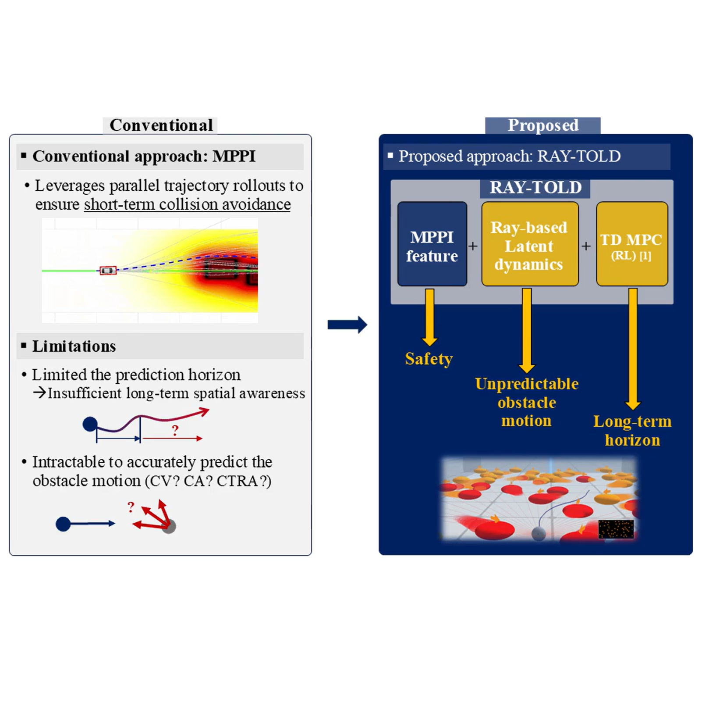
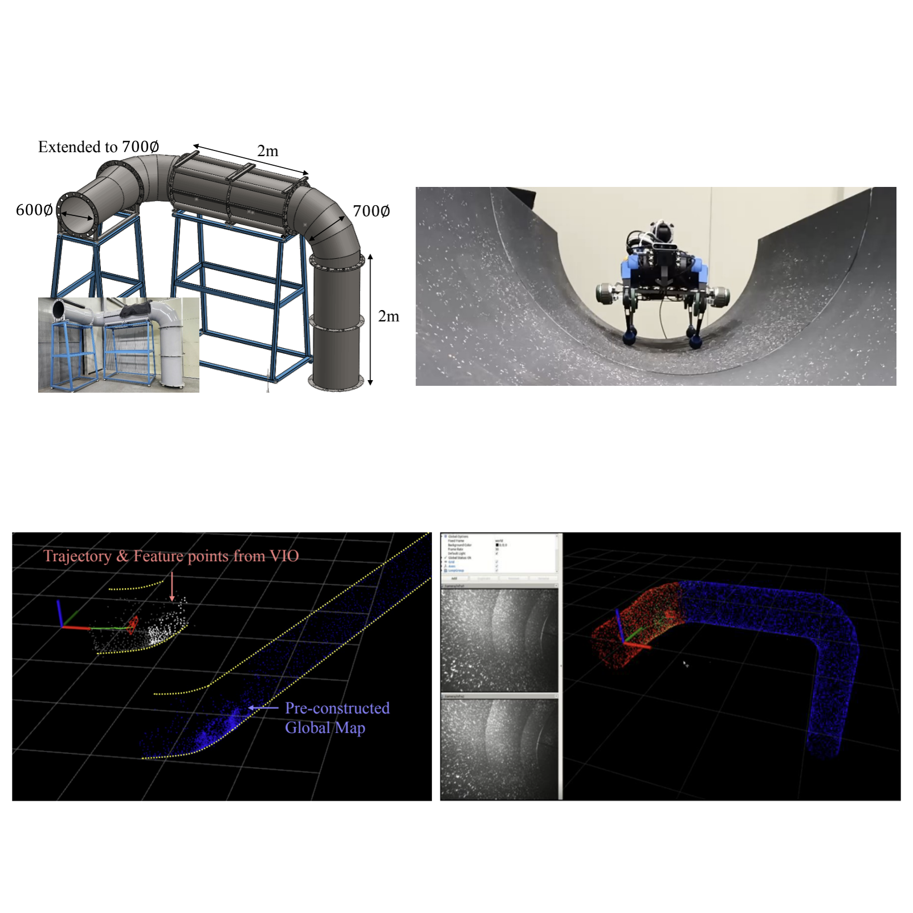
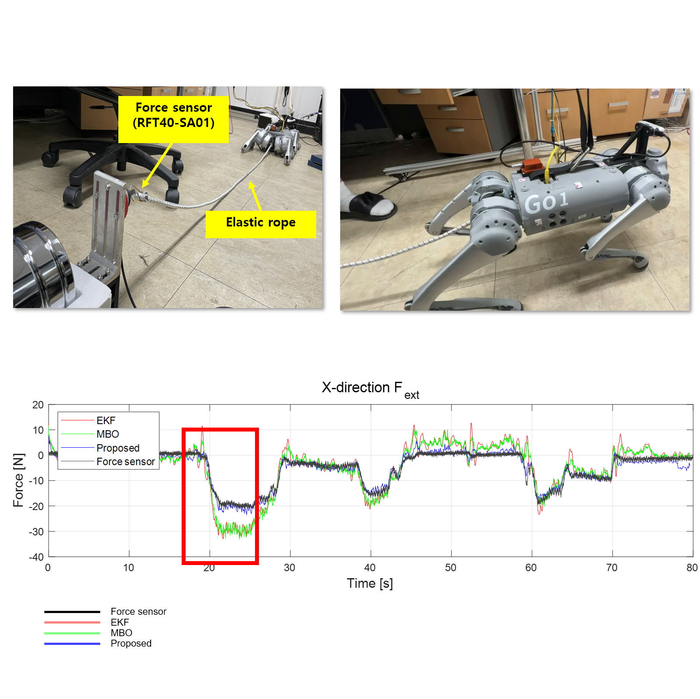
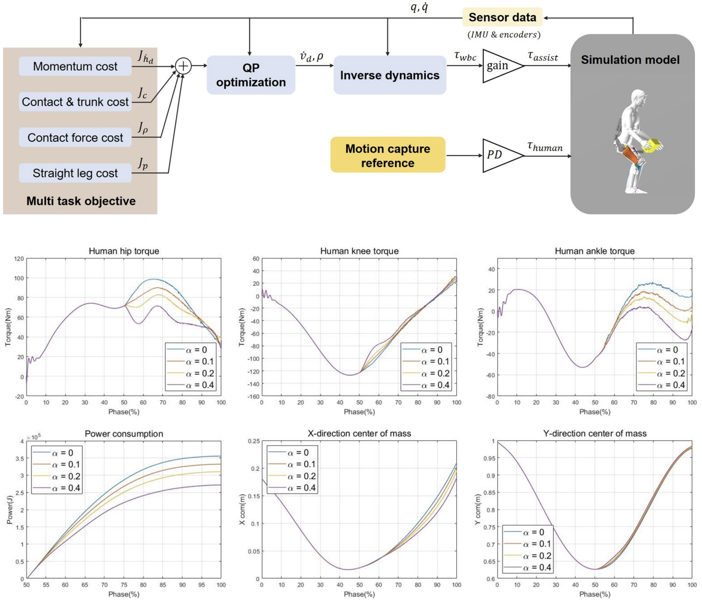
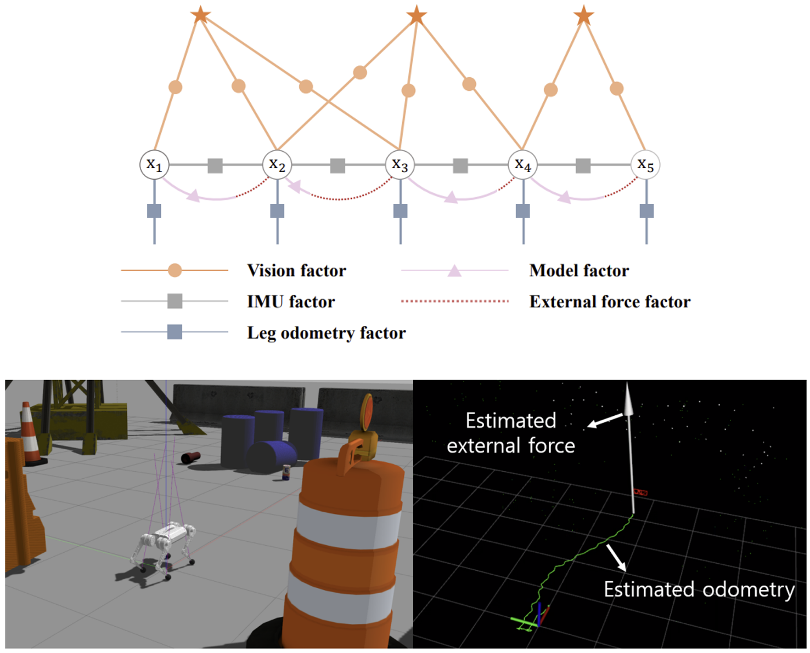

Jeonguk Kang
I am currently an AI Robotics Engineer at Samsung Electronics, where I develop control and learning frameworks for humanoid robots, with a focus on whole-body control, loco-manipulation, and sim-to-real adaptation for real-world deployment.
My research aims to build reliable and scalable control pipelines for embodied robotic systems operating in complex real-world environments. I am particularly interested in reinforcement learning for humanoid control, state estimation, and practical approaches to narrowing the sim-to-real gap in real-world robotics.
- 2026. 01 - Present: Staff Engineer, Samsung Electronics, Future Robot AI Group
- 2025. 03 - 2025. 12: Staff Engineer, Samsung Research, Robot Center
- 2024. 03 - 2025. 02: Post-doctoral Researcher, Korea Institute of Science and Technology (KIST)
- 2020. 03 - 2024. 02: Ph.D. in Mechanical Engineering, Korea Advanced Institute of Science and Technology (KAIST)
- 2018. 03 - 2020. 02: M.S. in Mechanical Engineering, Korea Advanced Institute of Science and Technology (KAIST)
- 2013. 03 - 2018. 02: B.S. in Mechanical Engineering, Korea Advanced Institute of Science and Technology (KAIST)
Research Keywords : Humanoids and Quadrupeds, Whole-Body Control, Loco-Manipulation, Sim-to-Real Adaptation, Reinforcement Learning, State Estimation, Model Predictive Control (MPC)
Research
-
SafeFlow: Real-Time Text-Driven Humanoid Whole-Body Control via Physics-Guided Rectified Flow and Selective Safety Gating
Hanbyel Cho, Sang-Hun Kim, Jeonguk Kang, Donghan Koo
arXiv Preprint, 2026 -

RAY-TOLD: Ray-Based Latent Dynamics for Dense Dynamic Obstacle Avoidance with TDMPC
Seungho Han, Seokju Lee, Jeonguk Kang* (*Corresponding author)
Under review, 2026 -
4D Radar-Camera Based Vector Map SLAM Using Dynamic Object Removal Mask
Minseong Choi, Jeonguk Kang, Seungho Han
Under review, 2026 -
Dual-MPC Footstep Planning for Robust Quadruped Locomotion
Byeong-Il Ham, Hyun-Bin Kim, Jeonguk Kang, Keun Ha Choi, Kyung-Soo Kim
Under review, 2025 -
Adaptive Gait Pattern Switching under External Disturbances Using Multi-Modal MPC
Jeonguk Kang, Byeong-Il Ham, Seungho Han, Hyun-Bin Kim, Kyung-Soo Kim
IEEE International Conference on Robot and Human Interactive Communication (RO-MAN), 2025 -

IEEE IROS 2025 Workshop: Wheeled-Legged Robot Competition
Seokju Lee*, Jeonguk Kang*, Seungho Han* (*Equal contribution)
Winner (1st Prize), 2025 -

Development of Remote Piping Inspection System with Dual-Mode Locomotion Quadruped Robot
Hyun-Bin Kim, Chanseok Kim, Byeong-Il Ham, Jeonguk Kang, Minseong Choi, Keun-Ha Choi, Kyung-Soo Kim
International Conference on Robot Intelligence Technology and Applications (RITA), 2024
(Best System Paper Award) -

External Force Adaptive Control in Legged Robots Through Footstep Optimization and Disturbance Feedback
Jeonguk Kang, Hyun-Bin Kim, Byeong-Il Ham, Kyung-Soo Kim
IEEE Access, 2024 -

View: Visual-inertial External Wrench Estimator for Legged Robot
Jeonguk Kang, Hyun-Bin Kim, Kyung-Soo Kim
IEEE Robotics and Automation Letters (RA-L), 2023 -

Whole-body Control Based Lifting Assistance Simulation for Exoskeletons
Jeonguk Kang, Donghyun Kim, Hyun-Joon Chung, Kwang-Woo Jeon, Kyung-Soo Kim
International Journal of Control, Automation and Systems (IJCAS), 2023 -

External Force Estimation of Legged Robots via a Factor Graph Framework with a Disturbance Observer
Jeonguk Kang, Hyun-Bin Kim, Keun Ha Choi, Kyung-Soo Kim
IEEE International Conference on Robotics and Automation (ICRA), 2023
Projects
-
Whole-body control of a hybrid bipedal robot based on pneumatic and electric actuation 12.2018 - 12.2021
-
Development of Modular Exoskeleton Technology for Gait Assistance 06.2019 - 02.2024
-
Development of a Quadruped Robot Platform for Seawater Pipeline Inspection 06.2020 - 02.2023
-
Hip Assistance Technology Using Wearable Exo-suit 03.2024 - 12.2024
-
Robotic Manipulation for Healthcare: Automated Ultrasound Scanning 03.2025 - 12.2025